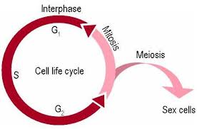
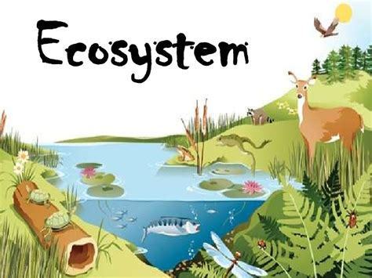

This is what you will learn about.One of the main topics this website will cover is the cell life, which includes plant and animal cells. In this topic students will use illustrations or direct observations to compare and contrast the basic structures of plant and animal cells.  Another topic this website will include is the ecosystem and the living organisms that are part of it. During this part of the website students will analyze how an increase or decrease in competition or predation affects an ecosystem. 